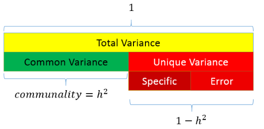
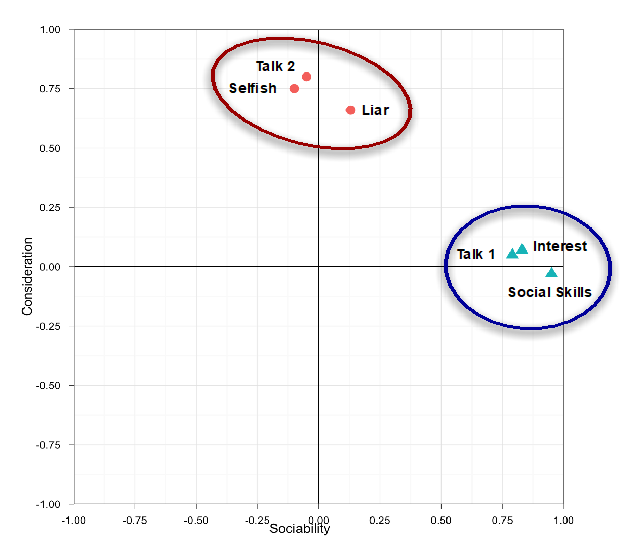

Topic 12 Factor Analysis
## Parsed with column specification:
## cols(
## .default = col_double()
## )## See spec(...) for full column specifications.12.1 Overview
- What is factor analysis
- CFA versus PCA
- Variance in factor analysis
- Considertations for factor analysis
- Identifying / extracting factors
- Rotation
- Cronbach’s alpha
12.2 Exploratory Factor analysis
- Identify the relational structure between a set of variables in order to reduce them to a smaller set of factors
- The process of dimension reduction (identify new variables) or data summarisation (summarise what is already there)
12.2.1 Dimension reducton
- Latent Variables: Not directly observable. Rather they are inferred from other responses
- Many psychological constructs (e.g. anxiety) are latent variables that we cannot directly measure.
- Rather, we can measure behaviours, cognitions and other variables that are related to the construct.
We might concptualise this as: “Responses to the questions are indicative of levels of underlying anxiety”

12.2.2 Data summarisation
Index Variables or Components: A weighted summary of measured variables that contribute to the component variable
“Principal components are variables of maximal variance constructed from linear combinations of the input features”
We might conceptualise this as: “We can reduce these measures/questions to a smaller set of higher order, independent, composite variables”
12.3 Variance in exploratory factor analysis
There are two common methods of exploratory factor analysis: Common Factor analysis and Principal Component Analysis
- CFA assumes that there are two types of variance: common and unique

12.3.1 Variance in PCA
- PCA only assumes common variance
12.3.2 Variance in CFA
- Due to these different approaches, PCA is considered to be reflective of the current sample but not generalisable to the wider population
- Whereas, CFA is considered appropriate for hypothesis testing and making inferences to the population
12.4 What is factor analysis?
- If we measure several variables (or questions), we can examine the correlation between sets of these variables
- Such a correlation matrix is known as an R Matrix (r because correlation)
- If there are clusters of correlations between a number of the variables (or questions), this indicates that they might be linked to the same underlying dimension (or latent variable)
- The researcher should use informed judgement when assessing the appropriateness of variables for inclusion
 An r matrix example
An r matrix example
12.5 Considerations with factor analysis
- Sample size:
- Must be more data points than variables being measured
- A common rule of thumb is at least 10 per variable
- There are tests to assess sample size adequacy (e.g. Kaiser-Meyer test should be greater than 0.5)
- Inter-correlation:
- There must be sufficient correlation between the variables being measured
- A high number of correlations over 0.3
- Can be tested using Bartlett test of sphericity (sig. result means factor analysis can be used)
Other things to check (see Field, 2018)
- The quality of analysis depends upon the quality of the data (GI/GO).
- Avoid multicollinearity:
- several variables highly correlated, r > .80.
- Determinent: should be greater than 0.00001
- Avoid singularity:
- some variables perfectly correlated, r = 1.
- Screen the correlation matrix, eliminate any variables that obviously cause concern.
12.6 Representing factor analysis
We can represent factors visually based on the strength of their inter-correlations - Here, the axis of the graph represents a factor or latent variable

We can also represent factor analysis using a regression equation - Here the beta values represent the extent to which the variable “loads onto” a particular factor

Example: Statistics anxiety
Many people get anxious about statistics
We can ask them about their experience in a number of ways (e.g. questions compiled by students in a stats class)
Their responses might indicate that stats anxiety has a number of dimensions
- i.e. it is a multi-dimensional construct, as opposed to a unitary construct

12.7 Step 1: Create a correlation matrix
raq.matrix <- cor(raq)
raq.matrix## Q01 Q02 Q03 Q04 Q05 Q06
## Q01 1.000000000 -0.09872403 -0.3366489 0.43586018 0.40243992 0.21673399
## Q02 -0.098724032 1.00000000 0.3183902 -0.11185965 -0.11934658 -0.07420968
## Q03 -0.336648879 0.31839020 1.0000000 -0.38046016 -0.31030879 -0.22674048
## Q04 0.435860179 -0.11185965 -0.3804602 1.00000000 0.40067225 0.27820154
## Q05 0.402439917 -0.11934658 -0.3103088 0.40067225 1.00000000 0.25746014
## Q06 0.216733985 -0.07420968 -0.2267405 0.27820154 0.25746014 1.00000000
## Q07 0.305365139 -0.15917448 -0.3819533 0.40861502 0.33939179 0.51358048
## Q08 0.330737608 -0.04962257 -0.2586342 0.34942939 0.26862697 0.22283175
## Q09 -0.092339458 0.31464054 0.2998036 -0.12454637 -0.09570151 -0.11264384
## Q10 0.213681706 -0.08400316 -0.1933887 0.21581010 0.25820925 0.32223023
## Q11 0.356786290 -0.14382984 -0.3506397 0.36865655 0.29782882 0.32807072
## Q12 0.345381133 -0.19486946 -0.4099513 0.44164706 0.34674325 0.31250937
## Q13 0.354646283 -0.14274026 -0.3179193 0.34429168 0.30182159 0.46640487
## Q14 0.337879655 -0.16469991 -0.3707551 0.35080964 0.31533810 0.40224407
## Q15 0.245752635 -0.16499581 -0.3123968 0.33423089 0.26137190 0.35989309
## Q16 0.498618057 -0.16755228 -0.4186478 0.41586725 0.39491795 0.24433888
## Q17 0.370550512 -0.08699527 -0.3273715 0.38273945 0.31041722 0.28226121
## Q18 0.347118037 -0.16389415 -0.3752329 0.38200149 0.32209148 0.51332164
## Q19 -0.189011027 0.20329748 0.3415737 -0.18597751 -0.16532210 -0.16675017
## Q20 0.213897945 -0.20159437 -0.3248338 0.24291796 0.19966945 0.10092489
## Q21 0.329153138 -0.20461730 -0.4171878 0.41029317 0.33461494 0.27233273
## Q22 -0.104408664 0.23087487 0.2036569 -0.09838349 -0.13253593 -0.16513541
## Q23 -0.004480593 0.09967828 0.1502065 -0.03381815 -0.04165684 -0.06868743
## Q07 Q08 Q09 Q10 Q11 Q12
## Q01 0.30536514 0.33073761 -0.09233946 0.21368171 0.35678629 0.34538113
## Q02 -0.15917448 -0.04962257 0.31464054 -0.08400316 -0.14382984 -0.19486946
## Q03 -0.38195325 -0.25863421 0.29980362 -0.19338871 -0.35063969 -0.40995127
## Q04 0.40861502 0.34942939 -0.12454637 0.21581010 0.36865655 0.44164706
## Q05 0.33939179 0.26862697 -0.09570151 0.25820925 0.29782882 0.34674325
## Q06 0.51358048 0.22283175 -0.11264384 0.32223023 0.32807072 0.31250937
## Q07 1.00000000 0.29749696 -0.12829828 0.28372299 0.34474770 0.42298591
## Q08 0.29749696 1.00000000 0.01573316 0.15860850 0.62929768 0.25198582
## Q09 -0.12829828 0.01573316 1.00000000 -0.13418658 -0.11552479 -0.16739436
## Q10 0.28372299 0.15860850 -0.13418658 1.00000000 0.27143657 0.24582591
## Q11 0.34474770 0.62929768 -0.11552479 0.27143657 1.00000000 0.33529466
## Q12 0.42298591 0.25198582 -0.16739436 0.24582591 0.33529466 1.00000000
## Q13 0.44211926 0.31424716 -0.16743882 0.30196707 0.42316548 0.48871303
## Q14 0.44070276 0.28058958 -0.12150197 0.25468730 0.32532025 0.43270398
## Q15 0.39136675 0.29968600 -0.18657099 0.29523438 0.36482687 0.33179910
## Q16 0.38854534 0.32149420 -0.18886556 0.29058576 0.36907763 0.40805908
## Q17 0.39074283 0.59014022 -0.03681556 0.21832214 0.58683495 0.33269383
## Q18 0.50086685 0.27974433 -0.14957782 0.29250304 0.37341373 0.49296482
## Q19 -0.26912031 -0.15947671 0.24931170 -0.12723487 -0.19965203 -0.26665953
## Q20 0.22095420 0.17515089 -0.15864747 0.08406520 0.25533736 0.29802585
## Q21 0.48300388 0.29571756 -0.13594310 0.19313633 0.34643407 0.44063832
## Q22 -0.16820488 -0.07917265 0.25684622 -0.13090831 -0.16198921 -0.16728557
## Q23 -0.07029016 -0.05023839 0.17077441 -0.06191796 -0.08637256 -0.04642506
## Q13 Q14 Q15 Q16 Q17 Q18
## Q01 0.35464628 0.33787966 0.24575263 0.49861806 0.37055051 0.34711804
## Q02 -0.14274026 -0.16469991 -0.16499581 -0.16755228 -0.08699527 -0.16389415
## Q03 -0.31791928 -0.37075510 -0.31239678 -0.41864780 -0.32737145 -0.37523290
## Q04 0.34429168 0.35080964 0.33423089 0.41586725 0.38273945 0.38200149
## Q05 0.30182159 0.31533810 0.26137190 0.39491795 0.31041722 0.32209148
## Q06 0.46640487 0.40224407 0.35989309 0.24433888 0.28226121 0.51332164
## Q07 0.44211926 0.44070276 0.39136675 0.38854534 0.39074283 0.50086685
## Q08 0.31424716 0.28058958 0.29968600 0.32149420 0.59014022 0.27974433
## Q09 -0.16743882 -0.12150197 -0.18657099 -0.18886556 -0.03681556 -0.14957782
## Q10 0.30196707 0.25468730 0.29523438 0.29058576 0.21832214 0.29250304
## Q11 0.42316548 0.32532025 0.36482687 0.36907763 0.58683495 0.37341373
## Q12 0.48871303 0.43270398 0.33179910 0.40805908 0.33269383 0.49296482
## Q13 1.00000000 0.44978632 0.34219704 0.35837775 0.40837657 0.53293713
## Q14 0.44978632 1.00000000 0.38011484 0.41841820 0.35374183 0.49830615
## Q15 0.34219704 0.38011484 1.00000000 0.45427861 0.37310235 0.34287045
## Q16 0.35837775 0.41841820 0.45427861 1.00000000 0.40976309 0.42197911
## Q17 0.40837657 0.35374183 0.37310235 0.40976309 1.00000000 0.37560681
## Q18 0.53293713 0.49830615 0.34287045 0.42197911 0.37560681 1.00000000
## Q19 -0.22697105 -0.25405813 -0.20980230 -0.26704702 -0.16288096 -0.25663183
## Q20 0.20396327 0.22592173 0.20625622 0.26514025 0.20523013 0.23518040
## Q21 0.37443078 0.39938896 0.29971557 0.42054273 0.36349147 0.43010427
## Q22 -0.19535632 -0.16983754 -0.16790617 -0.15579385 -0.12629066 -0.15982631
## Q23 -0.05298304 -0.04847418 -0.06200665 -0.08152195 -0.09167243 -0.08041698
## Q19 Q20 Q21 Q22 Q23
## Q01 -0.1890110 0.21389794 0.32915314 -0.10440866 -0.004480593
## Q02 0.2032975 -0.20159437 -0.20461730 0.23087487 0.099678285
## Q03 0.3415737 -0.32483385 -0.41718781 0.20365686 0.150206522
## Q04 -0.1859775 0.24291796 0.41029317 -0.09838349 -0.033818152
## Q05 -0.1653221 0.19966945 0.33461494 -0.13253593 -0.041656841
## Q06 -0.1667502 0.10092489 0.27233273 -0.16513541 -0.068687430
## Q07 -0.2691203 0.22095420 0.48300388 -0.16820488 -0.070290157
## Q08 -0.1594767 0.17515089 0.29571756 -0.07917265 -0.050238392
## Q09 0.2493117 -0.15864747 -0.13594310 0.25684622 0.170774410
## Q10 -0.1272349 0.08406520 0.19313633 -0.13090831 -0.061917956
## Q11 -0.1996520 0.25533736 0.34643407 -0.16198921 -0.086372565
## Q12 -0.2666595 0.29802585 0.44063832 -0.16728557 -0.046425059
## Q13 -0.2269710 0.20396327 0.37443078 -0.19535632 -0.052983042
## Q14 -0.2540581 0.22592173 0.39938896 -0.16983754 -0.048474181
## Q15 -0.2098023 0.20625622 0.29971557 -0.16790617 -0.062006650
## Q16 -0.2670470 0.26514025 0.42054273 -0.15579385 -0.081521950
## Q17 -0.1628810 0.20523013 0.36349147 -0.12629066 -0.091672426
## Q18 -0.2566318 0.23518040 0.43010427 -0.15982631 -0.080416984
## Q19 1.0000000 -0.24859386 -0.27489793 0.23392259 0.122434401
## Q20 -0.2485939 1.00000000 0.46770448 -0.09970186 -0.034665293
## Q21 -0.2748979 0.46770448 1.00000000 -0.12902148 -0.067664367
## Q22 0.2339226 -0.09970186 -0.12902148 1.00000000 0.230369402
## Q23 0.1224344 -0.03466529 -0.06766437 0.23036940 1.00000000012.8 Step 2: Let’s check for Inter-correlation
library(corrplot)## corrplot 0.84 loadedcorrplot(raq.matrix, method = "number")
- We can use bartlett’s test from the psych package
library(psych)
cortest.bartlett(raq.matrix, n=2571)## $chisq
## [1] 19334.49
##
## $p.value
## [1] 0
##
## $df
## [1] 25312.9 Step 3: Check sampling adequacy
- Overall should be > 0.5
KMO(raq)## Kaiser-Meyer-Olkin factor adequacy
## Call: KMO(r = raq)
## Overall MSA = 0.93
## MSA for each item =
## Q01 Q02 Q03 Q04 Q05 Q06 Q07 Q08 Q09 Q10 Q11 Q12 Q13 Q14 Q15
## 0.93 0.87 0.95 0.96 0.96 0.89 0.94 0.87 0.83 0.95 0.91 0.95 0.95 0.97 0.94
## Q16 Q17 Q18 Q19 Q20 Q21 Q22 Q23
## 0.93 0.93 0.95 0.94 0.89 0.93 0.88 0.7712.10 Step 4: Identify number of factors
- Based on Eigenvalues:
- Kaiser (1960) – retain factors with eigen values > 1.
- Joliffe (1972) – retain factors with eigen values > .70.
- Use a scree plot: Cattell (1966): use ‘point of inflexion.’
12.10.1 Which rule?
- Use Kaiser’s extraction when
- Less than 30 variables, communalities after extraction > 0.7
- Sample size > 250 and mean communality > 0.6
- Scree plot is good if sample size is > 200
12.10.2 Scree plot
scree(raq)
- We are looking for the point of inflection
- Where there is a drop-off
One approach: See how many factors we can draw a line through
12.10.3 Parallel analysis
How many dimensions of stats anxiety are captured in the questionnaire?
- We can run a parallel analysis to get an indication of the number of factors contained within the data
- Parallel Analysis:
- Simulates data within the same range of values as our data set
- Suggests that we retain, at maximum, the factors with eigenvalues larger than those extracted from simulated data.
library(psych)
parallel_analysis <- fa.parallel(raq)## Parallel analysis suggests that the number of factors = 6 and the number of components = 4parallel_analysis## Call: fa.parallel(x = raq)
## Parallel analysis suggests that the number of factors = 6 and the number of components = 4
##
## Eigen Values of
## Original factors Resampled data Simulated data Original components
## 1 6.64 0.24 0.21 7.29
## 2 0.91 0.15 0.15 1.74
## 3 0.63 0.14 0.13 1.32
## 4 0.48 0.12 0.11 1.23
## 5 0.29 0.10 0.10 0.99
## 6 0.13 0.09 0.08 0.90
## Resampled components Simulated components
## 1 1.17 1.17
## 2 1.15 1.14
## 3 1.13 1.12
## 4 1.11 1.11
## 5 1.10 1.09
## 6 1.08 1.0812.11 Step 5: Perform factor analysis (with initial recommended # factors)
paf <- fa(raq,
nfactors = 6,
fm="pa",
max.iter = 100,
rotate = "none")paf## Factor Analysis using method = pa
## Call: fa(r = raq, nfactors = 6, rotate = "none", max.iter = 100, fm = "pa")
## Standardized loadings (pattern matrix) based upon correlation matrix
## PA1 PA2 PA3 PA4 PA5 PA6 h2 u2 com
## Q01 0.57 0.13 -0.12 0.23 -0.28 -0.19 0.52 0.48 2.3
## Q02 -0.28 0.37 0.17 0.12 -0.03 0.01 0.26 0.74 2.6
## Q03 -0.60 0.25 0.20 -0.02 -0.01 0.03 0.46 0.54 1.6
## Q04 0.61 0.08 -0.06 0.18 -0.09 -0.03 0.42 0.58 1.3
## Q05 0.52 0.04 -0.02 0.15 -0.17 -0.08 0.33 0.67 1.5
## Q06 0.55 0.02 0.49 -0.17 0.07 -0.01 0.57 0.43 2.2
## Q07 0.66 -0.03 0.22 0.03 0.11 0.06 0.50 0.50 1.3
## Q08 0.55 0.49 -0.27 -0.21 0.10 -0.02 0.66 0.34 2.9
## Q09 -0.27 0.46 0.12 0.21 0.10 0.03 0.35 0.65 2.4
## Q10 0.40 -0.01 0.17 -0.09 -0.15 0.02 0.22 0.78 1.8
## Q11 0.64 0.31 -0.20 -0.27 0.08 -0.04 0.63 0.37 2.1
## Q12 0.64 -0.10 0.06 0.15 0.05 -0.07 0.45 0.55 1.2
## Q13 0.65 0.02 0.22 -0.06 0.06 -0.13 0.50 0.50 1.4
## Q14 0.63 -0.04 0.16 0.06 0.01 0.01 0.42 0.58 1.2
## Q15 0.58 -0.01 0.07 -0.15 -0.19 0.44 0.59 0.41 2.3
## Q16 0.66 -0.02 -0.11 0.14 -0.28 0.09 0.56 0.44 1.6
## Q17 0.63 0.36 -0.15 -0.15 0.04 0.01 0.57 0.43 1.9
## Q18 0.68 -0.04 0.28 0.04 0.09 -0.10 0.57 0.43 1.4
## Q19 -0.40 0.27 0.11 0.06 -0.05 0.02 0.25 0.75 2.0
## Q20 0.41 -0.17 -0.25 0.19 0.24 0.11 0.37 0.63 3.5
## Q21 0.64 -0.10 -0.11 0.27 0.28 0.10 0.60 0.40 2.0
## Q22 -0.28 0.29 0.05 0.28 0.05 0.11 0.26 0.74 3.4
## Q23 -0.13 0.18 0.08 0.23 0.01 0.08 0.12 0.88 3.1
##
## PA1 PA2 PA3 PA4 PA5 PA6
## SS loadings 6.79 1.14 0.83 0.67 0.45 0.32
## Proportion Var 0.30 0.05 0.04 0.03 0.02 0.01
## Cumulative Var 0.30 0.34 0.38 0.41 0.43 0.44
## Proportion Explained 0.67 0.11 0.08 0.07 0.04 0.03
## Cumulative Proportion 0.67 0.78 0.86 0.92 0.97 1.00
##
## Mean item complexity = 2
## Test of the hypothesis that 6 factors are sufficient.
##
## The degrees of freedom for the null model are 253 and the objective function was 7.55 with Chi Square of 19334.49
## The degrees of freedom for the model are 130 and the objective function was 0.23
##
## The root mean square of the residuals (RMSR) is 0.02
## The df corrected root mean square of the residuals is 0.02
##
## The harmonic number of observations is 2571 with the empirical chi square 364.66 with prob < 3.9e-24
## The total number of observations was 2571 with Likelihood Chi Square = 578.65 with prob < 7.6e-58
##
## Tucker Lewis Index of factoring reliability = 0.954
## RMSEA index = 0.037 and the 90 % confidence intervals are 0.034 0.04
## BIC = -442.12
## Fit based upon off diagonal values = 1
## Measures of factor score adequacy
## PA1 PA2 PA3 PA4 PA5
## Correlation of (regression) scores with factors 0.97 0.83 0.80 0.75 0.70
## Multiple R square of scores with factors 0.93 0.68 0.64 0.56 0.48
## Minimum correlation of possible factor scores 0.87 0.37 0.27 0.12 -0.03
## PA6
## Correlation of (regression) scores with factors 0.65
## Multiple R square of scores with factors 0.42
## Minimum correlation of possible factor scores -0.1712.11.1 Check the factor matrix
- We are looking high levels of variance explained with SS loadings > 1
print(paf$loadings, cutoff=0, digits=3)##
## Loadings:
## PA1 PA2 PA3 PA4 PA5 PA6
## Q01 0.567 0.129 -0.120 0.229 -0.275 -0.188
## Q02 -0.280 0.369 0.172 0.115 -0.029 0.009
## Q03 -0.603 0.245 0.199 -0.022 -0.006 0.030
## Q04 0.606 0.082 -0.056 0.184 -0.090 -0.033
## Q05 0.523 0.043 -0.020 0.154 -0.167 -0.083
## Q06 0.548 0.024 0.488 -0.166 0.073 -0.006
## Q07 0.662 -0.026 0.223 0.030 0.107 0.057
## Q08 0.545 0.488 -0.272 -0.214 0.096 -0.020
## Q09 -0.266 0.462 0.124 0.210 0.097 0.032
## Q10 0.405 -0.005 0.172 -0.090 -0.148 0.024
## Q11 0.644 0.312 -0.199 -0.270 0.085 -0.037
## Q12 0.641 -0.099 0.063 0.154 0.047 -0.067
## Q13 0.650 0.024 0.223 -0.058 0.061 -0.134
## Q14 0.626 -0.036 0.161 0.056 0.011 0.013
## Q15 0.580 -0.007 0.072 -0.152 -0.188 0.436
## Q16 0.661 -0.016 -0.109 0.138 -0.283 0.094
## Q17 0.629 0.355 -0.155 -0.150 0.038 0.006
## Q18 0.683 -0.039 0.277 0.041 0.092 -0.099
## Q19 -0.395 0.267 0.110 0.060 -0.052 0.022
## Q20 0.412 -0.171 -0.250 0.190 0.241 0.114
## Q21 0.644 -0.099 -0.110 0.270 0.283 0.099
## Q22 -0.279 0.291 0.050 0.284 0.047 0.114
## Q23 -0.130 0.182 0.081 0.235 0.011 0.077
##
## PA1 PA2 PA3 PA4 PA5 PA6
## SS loadings 6.786 1.140 0.827 0.667 0.452 0.324
## Proportion Var 0.295 0.050 0.036 0.029 0.020 0.014
## Cumulative Var 0.295 0.345 0.381 0.410 0.429 0.44312.11.2 Check the structure matrix
print(paf$Structure, cutoff=0, digits=3)##
## Loadings:
## PA1 PA2 PA3 PA4 PA5 PA6
## Q01 0.567 0.129 -0.120 0.229 -0.275 -0.188
## Q02 -0.280 0.369 0.172 0.115 -0.029 0.009
## Q03 -0.603 0.245 0.199 -0.022 -0.006 0.030
## Q04 0.606 0.082 -0.056 0.184 -0.090 -0.033
## Q05 0.523 0.043 -0.020 0.154 -0.167 -0.083
## Q06 0.548 0.024 0.488 -0.166 0.073 -0.006
## Q07 0.662 -0.026 0.223 0.030 0.107 0.057
## Q08 0.545 0.488 -0.272 -0.214 0.096 -0.020
## Q09 -0.266 0.462 0.124 0.210 0.097 0.032
## Q10 0.405 -0.005 0.172 -0.090 -0.148 0.024
## Q11 0.644 0.312 -0.199 -0.270 0.085 -0.037
## Q12 0.641 -0.099 0.063 0.154 0.047 -0.067
## Q13 0.650 0.024 0.223 -0.058 0.061 -0.134
## Q14 0.626 -0.036 0.161 0.056 0.011 0.013
## Q15 0.580 -0.007 0.072 -0.152 -0.188 0.436
## Q16 0.661 -0.016 -0.109 0.138 -0.283 0.094
## Q17 0.629 0.355 -0.155 -0.150 0.038 0.006
## Q18 0.683 -0.039 0.277 0.041 0.092 -0.099
## Q19 -0.395 0.267 0.110 0.060 -0.052 0.022
## Q20 0.412 -0.171 -0.250 0.190 0.241 0.114
## Q21 0.644 -0.099 -0.110 0.270 0.283 0.099
## Q22 -0.279 0.291 0.050 0.284 0.047 0.114
## Q23 -0.130 0.182 0.081 0.235 0.011 0.077
##
## PA1 PA2 PA3 PA4 PA5 PA6
## SS loadings 6.786 1.140 0.827 0.667 0.452 0.324
## Proportion Var 0.295 0.050 0.036 0.029 0.020 0.014
## Cumulative Var 0.295 0.345 0.381 0.410 0.429 0.44312.11.3 Check eigenvalues
paf$e.values[1:6]## [1] 7.2900471 1.7388287 1.3167515 1.2271982 0.9878779 0.895330412.11.4 Check communalities
- Communality for each variable: the percentage of variance that can be explained by the retained factors.
- Retained factors should explain more of the variance in each variable.
paf$communality## Q01 Q02 Q03 Q04 Q05 Q06 Q07
## 0.5170176 0.2585136 0.4643374 0.4196524 0.3341637 0.5720655 0.5042725
## Q08 Q09 Q10 Q11 Q12 Q13 Q14
## 0.6649413 0.3542281 0.2240464 0.6328967 0.4544862 0.4973541 0.4223263
## Q15 Q16 Q17 Q18 Q19 Q20 Q21
## 0.5902303 0.5571656 0.5700891 0.5655104 0.2467731 0.3686202 0.5991875
## Q22 Q23
## 0.2606533 0.117883912.12 Step 6: Perform factor analysis (with reduced number of factors)
paf1 <- fa(raq,
nfactors = 2,
fm="pa",
max.iter = 100,
rotate = "none")
paf1## Factor Analysis using method = pa
## Call: fa(r = raq, nfactors = 2, rotate = "none", max.iter = 100, fm = "pa")
## Standardized loadings (pattern matrix) based upon correlation matrix
## PA1 PA2 h2 u2 com
## Q01 0.56 0.12 0.324 0.68 1.1
## Q02 -0.28 0.39 0.228 0.77 1.8
## Q03 -0.61 0.25 0.430 0.57 1.3
## Q04 0.61 0.09 0.377 0.62 1.0
## Q05 0.52 0.05 0.276 0.72 1.0
## Q06 0.53 0.04 0.282 0.72 1.0
## Q07 0.66 -0.01 0.437 0.56 1.0
## Q08 0.53 0.40 0.445 0.56 1.9
## Q09 -0.27 0.46 0.287 0.71 1.6
## Q10 0.40 0.00 0.163 0.84 1.0
## Q11 0.63 0.27 0.472 0.53 1.3
## Q12 0.64 -0.08 0.421 0.58 1.0
## Q13 0.65 0.04 0.421 0.58 1.0
## Q14 0.63 -0.02 0.396 0.60 1.0
## Q15 0.56 0.00 0.315 0.68 1.0
## Q16 0.65 -0.01 0.428 0.57 1.0
## Q17 0.63 0.34 0.511 0.49 1.5
## Q18 0.68 -0.02 0.461 0.54 1.0
## Q19 -0.40 0.28 0.238 0.76 1.8
## Q20 0.40 -0.15 0.187 0.81 1.3
## Q21 0.63 -0.07 0.403 0.60 1.0
## Q22 -0.28 0.29 0.161 0.84 2.0
## Q23 -0.13 0.19 0.053 0.95 1.8
##
## PA1 PA2
## SS loadings 6.67 1.04
## Proportion Var 0.29 0.05
## Cumulative Var 0.29 0.34
## Proportion Explained 0.86 0.14
## Cumulative Proportion 0.86 1.00
##
## Mean item complexity = 1.3
## Test of the hypothesis that 2 factors are sufficient.
##
## The degrees of freedom for the null model are 253 and the objective function was 7.55 with Chi Square of 19334.49
## The degrees of freedom for the model are 208 and the objective function was 1.23
##
## The root mean square of the residuals (RMSR) is 0.05
## The df corrected root mean square of the residuals is 0.05
##
## The harmonic number of observations is 2571 with the empirical chi square 3114.53 with prob < 0
## The total number of observations was 2571 with Likelihood Chi Square = 3155.34 with prob < 0
##
## Tucker Lewis Index of factoring reliability = 0.812
## RMSEA index = 0.074 and the 90 % confidence intervals are 0.072 0.077
## BIC = 1522.12
## Fit based upon off diagonal values = 0.97
## Measures of factor score adequacy
## PA1 PA2
## Correlation of (regression) scores with factors 0.96 0.78
## Multiple R square of scores with factors 0.92 0.61
## Minimum correlation of possible factor scores 0.83 0.23plot(paf1)
12.13 Factor analysis rotation
What is rotation?
- It is possible that variables load “highly” onto one factor and “medium” onto another
- By rotating the factor axes, the variables are aligned with the factors that they load onto most
- This helps us discriminate between factors
There are different methods of rotation
- Orthogonal rotation: Assumes that factors are unrelated and keeps them that way
- Oblique rotation: Assumes that factors might be related and allows them to be correlated after rotation
Are factors related? -Theoretical: Do we have logical reason for thinking they could be connected? -Based on data: Does the factor plot suggest independence or relatedness?
12.14 Step 7: Rotation
- Perform factor analysis (with rotation)
paf2 <- fa(raq,
nfactors = 2,
fm="pa",
max.iter = 100,
rotate = "oblimin")## Loading required namespace: GPArotationpaf2## Factor Analysis using method = pa
## Call: fa(r = raq, nfactors = 2, rotate = "oblimin", max.iter = 100,
## fm = "pa")
## Standardized loadings (pattern matrix) based upon correlation matrix
## PA1 PA2 h2 u2 com
## Q01 0.57 0.03 0.324 0.68 1.0
## Q02 -0.12 0.44 0.228 0.77 1.2
## Q03 -0.48 0.36 0.430 0.57 1.8
## Q04 0.61 -0.01 0.377 0.62 1.0
## Q05 0.52 -0.03 0.276 0.72 1.0
## Q06 0.52 -0.05 0.282 0.72 1.0
## Q07 0.63 -0.11 0.437 0.56 1.1
## Q08 0.66 0.32 0.445 0.56 1.4
## Q09 -0.08 0.51 0.287 0.71 1.0
## Q10 0.39 -0.06 0.163 0.84 1.1
## Q11 0.70 0.16 0.472 0.53 1.1
## Q12 0.58 -0.19 0.421 0.58 1.2
## Q13 0.63 -0.07 0.421 0.58 1.0
## Q14 0.59 -0.12 0.396 0.60 1.1
## Q15 0.53 -0.09 0.315 0.68 1.1
## Q16 0.62 -0.12 0.428 0.57 1.1
## Q17 0.73 0.24 0.511 0.49 1.2
## Q18 0.64 -0.13 0.461 0.54 1.1
## Q19 -0.27 0.35 0.238 0.76 1.9
## Q20 0.33 -0.22 0.187 0.81 1.8
## Q21 0.57 -0.18 0.403 0.60 1.2
## Q22 -0.15 0.34 0.161 0.84 1.4
## Q23 -0.05 0.21 0.053 0.95 1.1
##
## PA1 PA2
## SS loadings 6.33 1.39
## Proportion Var 0.28 0.06
## Cumulative Var 0.28 0.34
## Proportion Explained 0.82 0.18
## Cumulative Proportion 0.82 1.00
##
## With factor correlations of
## PA1 PA2
## PA1 1.00 -0.22
## PA2 -0.22 1.00
##
## Mean item complexity = 1.2
## Test of the hypothesis that 2 factors are sufficient.
##
## The degrees of freedom for the null model are 253 and the objective function was 7.55 with Chi Square of 19334.49
## The degrees of freedom for the model are 208 and the objective function was 1.23
##
## The root mean square of the residuals (RMSR) is 0.05
## The df corrected root mean square of the residuals is 0.05
##
## The harmonic number of observations is 2571 with the empirical chi square 3114.53 with prob < 0
## The total number of observations was 2571 with Likelihood Chi Square = 3155.34 with prob < 0
##
## Tucker Lewis Index of factoring reliability = 0.812
## RMSEA index = 0.074 and the 90 % confidence intervals are 0.072 0.077
## BIC = 1522.12
## Fit based upon off diagonal values = 0.97
## Measures of factor score adequacy
## PA1 PA2
## Correlation of (regression) scores with factors 0.96 0.81
## Multiple R square of scores with factors 0.91 0.65
## Minimum correlation of possible factor scores 0.82 0.30plot(paf1)
plot(paf2)
12.15 Reliability / internal consistency
12.15.1 Cronbach’s Alpha
- An expansion of the split-half reliability concept
- Alpha takes all possible combination of items and assesses their relationship to each other
- High values above 0.7 suggest internal consistency among items
12.15.2 Chronbach’s Alpha in R
- We can use the alpha() function in the psych package
library(psych)
alpha(raq)## Warning in alpha(raq): Some items were negatively correlated with the total scale and probably
## should be reversed.
## To do this, run the function again with the 'check.keys=TRUE' option## Some items ( Q02 Q03 Q09 Q19 Q22 Q23 ) were negatively correlated with the total scale and
## probably should be reversed.
## To do this, run the function again with the 'check.keys=TRUE' option##
## Reliability analysis
## Call: alpha(x = raq)
##
## raw_alpha std.alpha G6(smc) average_r S/N ase mean sd median_r
## 0.75 0.77 0.83 0.13 3.4 0.0065 3.3 0.39 0.23
##
## lower alpha upper 95% confidence boundaries
## 0.74 0.75 0.77
##
## Reliability if an item is dropped:
## raw_alpha std.alpha G6(smc) average_r S/N alpha se var.r med.r
## Q01 0.73 0.76 0.82 0.12 3.1 0.0071 0.071 0.23
## Q02 0.77 0.79 0.84 0.15 3.8 0.0061 0.071 0.25
## Q03 0.79 0.81 0.85 0.16 4.2 0.0055 0.059 0.25
## Q04 0.73 0.75 0.82 0.12 3.0 0.0072 0.070 0.22
## Q05 0.74 0.76 0.82 0.12 3.1 0.0071 0.072 0.22
## Q06 0.73 0.76 0.82 0.12 3.1 0.0072 0.072 0.23
## Q07 0.73 0.75 0.82 0.12 3.0 0.0074 0.069 0.22
## Q08 0.73 0.76 0.82 0.12 3.1 0.0071 0.072 0.23
## Q09 0.78 0.79 0.84 0.15 3.8 0.0058 0.071 0.25
## Q10 0.74 0.76 0.83 0.13 3.3 0.0068 0.074 0.23
## Q11 0.73 0.75 0.81 0.12 3.0 0.0072 0.069 0.22
## Q12 0.73 0.75 0.82 0.12 3.1 0.0072 0.069 0.22
## Q13 0.73 0.75 0.82 0.12 3.0 0.0073 0.069 0.22
## Q14 0.73 0.75 0.82 0.12 3.1 0.0072 0.070 0.22
## Q15 0.73 0.76 0.82 0.12 3.1 0.0071 0.071 0.22
## Q16 0.73 0.75 0.82 0.12 3.0 0.0072 0.069 0.22
## Q17 0.73 0.75 0.81 0.12 3.0 0.0072 0.070 0.22
## Q18 0.72 0.75 0.81 0.12 3.0 0.0074 0.068 0.22
## Q19 0.78 0.80 0.85 0.15 4.0 0.0057 0.067 0.26
## Q20 0.75 0.77 0.83 0.13 3.3 0.0067 0.073 0.25
## Q21 0.73 0.75 0.82 0.12 3.1 0.0072 0.069 0.22
## Q22 0.77 0.79 0.84 0.15 3.8 0.0059 0.071 0.26
## Q23 0.77 0.79 0.84 0.14 3.7 0.0061 0.074 0.26
##
## Item statistics
## n raw.r std.r r.cor r.drop mean sd
## Q01 2571 0.5598 0.581 0.564 0.492 3.6 0.83
## Q02 2571 -0.0116 -0.018 -0.114 -0.105 4.4 0.85
## Q03 2571 -0.3356 -0.361 -0.465 -0.435 3.4 1.08
## Q04 2571 0.6064 0.618 0.606 0.533 3.2 0.95
## Q05 2571 0.5365 0.546 0.516 0.454 3.3 0.96
## Q06 2571 0.5709 0.560 0.547 0.478 3.8 1.12
## Q07 2571 0.6409 0.636 0.635 0.560 3.1 1.10
## Q08 2571 0.5646 0.582 0.578 0.493 3.8 0.87
## Q09 2571 0.0587 0.020 -0.068 -0.081 3.2 1.26
## Q10 2571 0.4300 0.442 0.391 0.346 3.7 0.88
## Q11 2571 0.6078 0.628 0.633 0.540 3.7 0.88
## Q12 2571 0.5909 0.602 0.593 0.519 2.8 0.92
## Q13 2571 0.6288 0.637 0.634 0.559 3.6 0.95
## Q14 2571 0.6056 0.609 0.596 0.528 3.1 1.00
## Q15 2571 0.5433 0.550 0.526 0.457 3.2 1.01
## Q16 2571 0.5965 0.615 0.612 0.525 3.1 0.92
## Q17 2571 0.6329 0.650 0.653 0.568 3.5 0.88
## Q18 2571 0.6534 0.653 0.656 0.578 3.4 1.05
## Q19 2571 -0.1316 -0.157 -0.264 -0.248 3.7 1.10
## Q20 2571 0.3705 0.375 0.326 0.265 2.4 1.04
## Q21 2571 0.5922 0.598 0.591 0.514 2.8 0.98
## Q22 2571 -0.0063 -0.027 -0.127 -0.121 3.1 1.04
## Q23 2571 0.1030 0.084 -0.014 -0.013 2.6 1.04
##
## Non missing response frequency for each item
## 1 2 3 4 5 miss
## Q01 0.02 0.07 0.29 0.52 0.11 0
## Q02 0.01 0.04 0.08 0.31 0.56 0
## Q03 0.03 0.17 0.34 0.26 0.19 0
## Q04 0.05 0.17 0.36 0.37 0.05 0
## Q05 0.04 0.18 0.29 0.43 0.06 0
## Q06 0.06 0.10 0.13 0.44 0.27 0
## Q07 0.09 0.24 0.26 0.34 0.07 0
## Q08 0.03 0.06 0.19 0.58 0.15 0
## Q09 0.08 0.28 0.23 0.20 0.20 0
## Q10 0.02 0.10 0.18 0.57 0.14 0
## Q11 0.02 0.06 0.22 0.53 0.16 0
## Q12 0.09 0.23 0.46 0.20 0.02 0
## Q13 0.03 0.12 0.25 0.48 0.12 0
## Q14 0.07 0.18 0.38 0.31 0.06 0
## Q15 0.06 0.18 0.30 0.39 0.07 0
## Q16 0.06 0.16 0.42 0.33 0.04 0
## Q17 0.03 0.10 0.27 0.52 0.08 0
## Q18 0.06 0.12 0.31 0.37 0.14 0
## Q19 0.02 0.15 0.22 0.33 0.29 0
## Q20 0.22 0.37 0.25 0.15 0.02 0
## Q21 0.09 0.29 0.34 0.26 0.02 0
## Q22 0.05 0.26 0.34 0.26 0.10 0
## Q23 0.12 0.42 0.27 0.12 0.06 0- Here we get a warning that some of the items are negatively correlated and we should probably reverse them.
- The decision to do so should be based on the logic of the questions themselves - check first
- However, since cronbach’s alpha is designed to check internal consistency related to a single construct, we would expect that negative correlations would only result from:
- Items that are designed to be reverse-scored
- Questions that are related to another factor or construct
- Let’s check the questionnaire
- (Q02, Q03, Q09, Q19, Q22, Q23):
- It is possible to run the analysis with automatic reversal of negatively-correlated items
alpha(raq, check.keys=TRUE)## Warning in alpha(raq, check.keys = TRUE): Some items were negatively correlated with total scale and were automatically reversed.
## This is indicated by a negative sign for the variable name.##
## Reliability analysis
## Call: alpha(x = raq, check.keys = TRUE)
##
## raw_alpha std.alpha G6(smc) average_r S/N ase mean sd median_r
## 0.89 0.89 0.91 0.27 8.3 0.0031 3.1 0.54 0.27
##
## lower alpha upper 95% confidence boundaries
## 0.88 0.89 0.9
##
## Reliability if an item is dropped:
## raw_alpha std.alpha G6(smc) average_r S/N alpha se var.r med.r
## Q01 0.88 0.89 0.90 0.26 7.9 0.0032 0.016 0.27
## Q02- 0.89 0.89 0.91 0.28 8.4 0.0031 0.016 0.28
## Q03- 0.88 0.89 0.90 0.26 7.8 0.0033 0.017 0.26
## Q04 0.88 0.89 0.90 0.26 7.8 0.0033 0.016 0.26
## Q05 0.89 0.89 0.90 0.27 8.0 0.0032 0.017 0.27
## Q06 0.88 0.89 0.90 0.27 8.0 0.0032 0.016 0.27
## Q07 0.88 0.89 0.90 0.26 7.7 0.0034 0.016 0.26
## Q08 0.89 0.89 0.90 0.27 8.0 0.0032 0.016 0.27
## Q09- 0.89 0.89 0.91 0.28 8.4 0.0030 0.016 0.28
## Q10 0.89 0.89 0.90 0.27 8.2 0.0032 0.017 0.28
## Q11 0.88 0.89 0.90 0.26 7.8 0.0033 0.016 0.26
## Q12 0.88 0.89 0.90 0.26 7.7 0.0033 0.016 0.26
## Q13 0.88 0.89 0.90 0.26 7.7 0.0033 0.016 0.26
## Q14 0.88 0.89 0.90 0.26 7.8 0.0033 0.016 0.26
## Q15 0.88 0.89 0.90 0.26 7.9 0.0033 0.017 0.27
## Q16 0.88 0.89 0.90 0.26 7.7 0.0033 0.016 0.26
## Q17 0.88 0.89 0.90 0.26 7.8 0.0033 0.016 0.26
## Q18 0.88 0.88 0.90 0.26 7.7 0.0034 0.016 0.26
## Q19- 0.89 0.89 0.90 0.27 8.2 0.0032 0.017 0.29
## Q20 0.89 0.89 0.90 0.27 8.2 0.0032 0.017 0.28
## Q21 0.88 0.89 0.90 0.26 7.7 0.0033 0.016 0.26
## Q22- 0.89 0.89 0.91 0.28 8.4 0.0031 0.016 0.29
## Q23- 0.89 0.90 0.91 0.28 8.7 0.0030 0.014 0.29
##
## Item statistics
## n raw.r std.r r.cor r.drop mean sd
## Q01 2571 0.55 0.57 0.54 0.50 3.6 0.83
## Q02- 2571 0.36 0.36 0.31 0.30 1.6 0.85
## Q03- 2571 0.65 0.64 0.62 0.59 2.6 1.08
## Q04 2571 0.61 0.61 0.59 0.55 3.2 0.95
## Q05 2571 0.54 0.55 0.52 0.48 3.3 0.96
## Q06 2571 0.56 0.55 0.53 0.49 3.8 1.12
## Q07 2571 0.67 0.67 0.65 0.62 3.1 1.10
## Q08 2571 0.51 0.53 0.51 0.46 3.8 0.87
## Q09- 2571 0.37 0.35 0.30 0.28 2.8 1.26
## Q10 2571 0.44 0.45 0.40 0.38 3.7 0.88
## Q11 2571 0.63 0.64 0.63 0.58 3.7 0.88
## Q12 2571 0.65 0.65 0.64 0.60 2.8 0.92
## Q13 2571 0.65 0.65 0.64 0.60 3.6 0.95
## Q14 2571 0.64 0.64 0.62 0.59 3.1 1.00
## Q15 2571 0.59 0.59 0.56 0.53 3.2 1.01
## Q16 2571 0.66 0.67 0.65 0.61 3.1 0.92
## Q17 2571 0.61 0.62 0.61 0.56 3.5 0.88
## Q18 2571 0.68 0.68 0.67 0.63 3.4 1.05
## Q19- 2571 0.47 0.46 0.42 0.40 2.3 1.10
## Q20 2571 0.45 0.45 0.41 0.38 2.4 1.04
## Q21 2571 0.64 0.64 0.63 0.59 2.8 0.98
## Q22- 2571 0.37 0.36 0.31 0.30 2.9 1.04
## Q23- 2571 0.23 0.22 0.15 0.15 3.4 1.04
##
## Non missing response frequency for each item
## 1 2 3 4 5 miss
## Q01 0.02 0.07 0.29 0.52 0.11 0
## Q02 0.01 0.04 0.08 0.31 0.56 0
## Q03 0.03 0.17 0.34 0.26 0.19 0
## Q04 0.05 0.17 0.36 0.37 0.05 0
## Q05 0.04 0.18 0.29 0.43 0.06 0
## Q06 0.06 0.10 0.13 0.44 0.27 0
## Q07 0.09 0.24 0.26 0.34 0.07 0
## Q08 0.03 0.06 0.19 0.58 0.15 0
## Q09 0.08 0.28 0.23 0.20 0.20 0
## Q10 0.02 0.10 0.18 0.57 0.14 0
## Q11 0.02 0.06 0.22 0.53 0.16 0
## Q12 0.09 0.23 0.46 0.20 0.02 0
## Q13 0.03 0.12 0.25 0.48 0.12 0
## Q14 0.07 0.18 0.38 0.31 0.06 0
## Q15 0.06 0.18 0.30 0.39 0.07 0
## Q16 0.06 0.16 0.42 0.33 0.04 0
## Q17 0.03 0.10 0.27 0.52 0.08 0
## Q18 0.06 0.12 0.31 0.37 0.14 0
## Q19 0.02 0.15 0.22 0.33 0.29 0
## Q20 0.22 0.37 0.25 0.15 0.02 0
## Q21 0.09 0.29 0.34 0.26 0.02 0
## Q22 0.05 0.26 0.34 0.26 0.10 0
## Q23 0.12 0.42 0.27 0.12 0.06 0